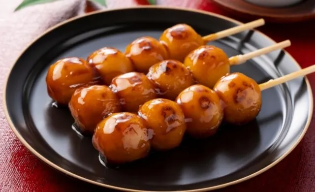

Mitarashi Dango

Description
Mitarashi dango is a Japanese traditional sweets made of bite-sized glutinous rice dumplings stuck on skewers
and
covered with sweet soy glaze. Typically, there are three to five dumplings on a skewer.
Ingredients
- 200 g Dangoko (Japanese rice dumpling flour)
- 140-150 ml water
- 4 Tbsp sugar
- 2 Tbsp mirin
- 2 Tbsp soy sauce
- 150 ml water (roughly ⅔ cup)
- 2 Tbsp potato starch/cornstarch
Steps
- Soak the skewers in water. You can start boiling a large pot of water on low heat.
- Add Dangoko in a bowl, and stir in cold water slowly while mixing with chopsticks.
- Combine the rice into one ball.
- Knead until the dough becomes smooth.
- Make the dough into a ball. Divide the dough into 8 equal pieces.
- Then divide each piece into 2 balls. You will have 16 equal-sized balls.
- Shape them into nice smooth round balls.
- When the water is boiling, drop each dumpling into the pot with a continuous motion.
- Dumplings will stay on the bottom first but once they are cooked, they will float. Then cook an
additional
1-2 minute.
- Transfer them into iced water after they are done cooking.
- Once the dumplings are cooled, drain well and transfer to a wet tray.
- Skewer three pieces into a bamboo skewer and do this step for the rest of the balls too.
Steps to make the Sweet Soy Glaze
- Combine sugar, mirin, soy sauce, water, and potato starch or cornstarch in a saucepan without turning on
the
heat.
- Mix it all together, then turn on the heat and continue to whisk.
- After the sauce becomes thick and heavy, stop the whisking, turn off the heat and transfer it to a bowl.
Pour the sweet soy glaze over your prepared balls and enjoy. Itadakimasu!